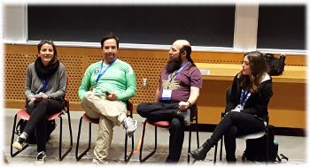

Recent improvements to Tor
We may need Tor, "the onion router", more than we ever imagined. Authoritarian states are blocking more and more web sites and snooping on their populations online—even routine tracking of our online activities can reveal information that can be used to undermine democracy. Thus, there was strong interest in the "State of the Onion" panel at the 2018 LibrePlanet conference, where four contributors to the Tor project presented a progress update covering the past few years.
According to panelist Nathan Freitas of the Guardian project, many people are moving from virtual private networks (VPNs) to Tor. And in turn, the open research done by the Tor community is being used by VPN providers to improve their own security. Some background here may be useful: a lot has been heard over the past few years about VPNs. Worries about snooping have led businesses and individuals to install them, but they weren't really designed for anonymous Internet use. Their goal is not to prevent attackers from knowing that person A communicated with person or site B—which is crucial connection information that anonymous Web users are trying to hide—but just to encrypt the communications themselves. VPNs are also designed to be integrated into organizations' internal networks, more than for standalone use on the Internet.

User experience (UX) was a major topic on the panel, especially if the term is taken broadly. Isabela Bagueros, UX team lead at Tor, said the project looks into UX far beyond just the appearance or behavior of the browser. The team also takes network performance and community feedback into account. Thus, many topics discussed by the panel—such as porting Tor to Android devices and improving memory use—can fall under the heading of "user experience".
Bagueros explained that Tor is not like traditional Internet projects that can routinely collect information on user behavior. Tor has to diligently protect its users' anonymity and avoid collecting any data without consent. The project can, however, recruit users to voluntarily let it collect information on performance and related browsing experiences. Tor is currently seeking to hire a director for its user testing project and has another position open for a user advocate.
Improvements in the user interface include more consistent fonts and colors, and a clearer display of circuits—how a user's Web requests travel through the routers in Tor's network—along with tools for viewing details. A new style guide allows far-flung free software developers to develop new tools that stay consistent to the choices made by designers for Tor's interface, Bagueros said. Documenting the style should in turn make development go faster, meaning more features in a timely manner. Steph Whited, communications director at Tor, also described a new guide to relays, which should help increase the size and reach of the Tor network.
Many popular Web sites that are frequent targets of blocking offer Tor access through the .onion domain. Bagueros said that Tor is encouraging these sites to prompt non-Tor visitors and let them know that .onion access is available.
Android support is becoming critical as people in developing nations seek safe access to the Web. Tor is important, for instance, for LGBTQ people in many Middle Eastern countries. It is also popular in Brazil and Indonesia, Freitas said, where many more people have access to mobile devices than to personal computers. The Android app for accessing Tor is currently called Orfox, but Freitas said it will soon be named simply "Tor Browser for Android", to reduce confusion. Android users can also choose to route particular apps through Tor. A #tor-mobile IRC channel is devoted to this project. Freitas reminded us that a user would have more secure anonymity by running the Tor browser on a free operating system such as GNU/Linux, but Tor on Android is better than no Tor at all.
Freitas said that people are even running their own routers on mobile devices. Tor puts extra resource burdens on these devices, of course, because of the constant network and memory use. This leads us to the comments by panelist Nick Mathewson (who is one of the founders of the Tor project) on network improvements.
Mathewson said that a recent distributed denial-of-service attack on Tor—either a malicious attack or possibly a poorly designed browser that went haywire—prompted the network developers to significantly improve Tor's efficiency and, in particular, to reduce its memory consumption. This should make it more usable on mobile devices as well as reduce its overall footprint. The list of routers returned to every Tor user is more compressed now, and is updated more frequently with smaller updates, which should also reduce the network burden for mobile devices.
When testing Tor on mobile devices, Mathewson said, developers learned that it consumed far too much power, causing Android to respond by putting Tor to sleep and re-awakening it as often as eleven times per second. The team has greatly reduced power usage since that finding.
Anonymity is improved by new router names that are more resistant to enumeration attacks. Previously, attackers could get access to the names of existing routers; now the attackers have much greater difficulty finding out that the routers exist. The new names are longer and harder to type and remember, but they are much more secure. Mathewson said that Tor developers are talking to other projects, such as Bitcoin, to learn how to make secure names that are more human-readable and memorable. Mathewson also said that Tor should be resistant to quantum computer attacks on its crypto by this time next year, an intriguing boast that I would love to hear more about. Finally, Mathewson said that a lot of development is moving to the Rust programming language, which is expected to greatly reduce buffer overflows and similar kinds of problems.
The panelists reported that China is blocking the IP addresses of relays that it sees being used as exit points to access Web resources. Tor is taking some steps to make it more expensive to block them.
On the communications side, Tor offers new web sites for support and for the community. Whited described some of the steps the project is taking to raise its visibility and connect more consistently with users and its fan base. An "Onion Everywhere" campaign is trying to increase the use of Tor. Tor is tweeting more often and posting to its blog at least once a week. The project is publicizing human interest stories about journalists and others who are using Tor to benefit the public interest. One recent app allows people to submit evidence to the International Criminal Court anonymously through Tor, for example.
A member of the audience who works with the distributed social network Mastodon suggested integrating it with Tor, which Mathewson said was an interesting idea but probably could not be a priority for the busy Tor network developers.
This panel illuminated responses that dedicated Tor developers and staff are making to the growing demand for safe, anonymous Web browsing. It certainly gave the impression that onion routing is a critical part of the contemporary Internet structure, to give everyone in the world access to information they have a right to have. I'm sure that attacks on Tor will increase, and that we'll hear more in the mainstream press about both the access provided by onion networks and the challenges they face .
| Index entries for this article | |
|---|---|
| Security | Anonymity |
| Security | Privacy |
| GuestArticles | Oram, Andy |
| Conference | LibrePlanet/2018 |
Posted Mar 29, 2018 7:57 UTC (Thu)
by rsidd (subscriber, #2582)
[Link] (14 responses)
Posted Mar 29, 2018 8:21 UTC (Thu)
by smurf (subscriber, #17840)
[Link] (2 responses)
Surprise: it won't.
Posted Mar 29, 2018 8:24 UTC (Thu)
by rsidd (subscriber, #2582)
[Link]
Posted Mar 29, 2018 10:37 UTC (Thu)
by nhippi (subscriber, #34640)
[Link]
Posted Mar 29, 2018 8:41 UTC (Thu)
by ema (subscriber, #17750)
[Link]
Posted Mar 29, 2018 10:34 UTC (Thu)
by merge (subscriber, #65339)
[Link] (5 responses)
The technical posssibility can't go away by design, but I think it's sad that people get the impression the Tor Project hides behind that fact and doesn't try to get creative around it.
Also, of course it's true that (maybe even stronger) anonymity can be achieved without using Tor, but some money instead. While that fact is important to see, it shouldn't always be a first reaction to doubts or critics. It's hard in this case, but taking doubts seriously is important and probably could be improved by the Tor Project.
I really think that this project will only get more important in the future, and maybe should get involved and try to fix any such non-technical issues as good as we can...
Posted Mar 29, 2018 14:35 UTC (Thu)
by Tara_Li (guest, #26706)
[Link] (1 responses)
The tech industry has got to figure out how to get this message out better - but aiming the message at law enforcement is useless, it needs to be aimed at the public. Law enforcement (and the politicians behind them) are going to keep putting their fingers in their ears, singing "la-la-la I can't hear you." and insisting that if the tech industry just "nerds harder", it could turn rose bushes into unicorns.
Posted Mar 29, 2018 15:37 UTC (Thu)
by NAR (subscriber, #1313)
[Link]
Posted Mar 29, 2018 16:19 UTC (Thu)
by nybble41 (subscriber, #55106)
[Link] (1 responses)
"Abused"? Facilitating the spread of illegal content (i.e. information one State or another is trying to suppress) is a core goal of the project. Its original purpose, back when the concept was first developed by the US Naval Research Laboratory, was to enable secure, untraceable communication between intelligence operatives (spies), which is not exactly legal and above-board from the perspective of the target country. Hiding one's location is critical to either role. Why would the Tor Project attempt to "do something about" the very reason for the project's existence? Anything which could be done to restrict the spread of CP via Tor could just as easily be turned to prevent the spread of "subversive" political messages etc., rendering Tor completely useless.
People have the right to communicate in private, including anonymity if they so desire. If you want to prevent child *abuse* or other forms of harm—a laudable goal, to be sure—you'll have to do something about it in the real world, not by attacking the means of communication.
Posted Mar 30, 2018 6:23 UTC (Fri)
by merge (subscriber, #65339)
[Link]
I admit i deliberately phrased that somewhat provokingly. Tor won't, shouldn't and can't become insecure in any way deliberately. Tor should be as safe to use as can be. Also it's of course definitely not Tor's business how cruel or ill some people are.
After talking with others who have a more distant view to Tor, I have the impression that there's *something* missing for people to accept or "trust" i.e. to use TorBrowser. I don't know what that is. Communicate how to report illegal content in case you encounter some? That applies to firefox as well. Diversity in the Tor Project's team itself would maybe help. Diversity in their funding too. I know that they are working on it. We should get involved!
For me personally, the project doesn't need to do anything more than what they do now. I only have the impression that some creativity to gain acceptance from everybody would be needed. For me, it's important to connect over Tor. It would equally be so for others. And they shouldn't reject the TorBrowser because they don't trust it or the organisation... but people do.
Posted Apr 5, 2018 23:55 UTC (Thu)
by ras (subscriber, #33059)
[Link]
I read this as "I can't see a solution and there probably isn't a solution, but somebody should be spending their time tying to find one anyway so I can feel better about using Tor".
Posted Mar 29, 2018 19:51 UTC (Thu)
by flussence (guest, #85566)
[Link]
We already have an anonymising network where sociopaths run rampant and cause widespread damage with no accountability - it's called the advertising industry, and the ownership has a lot of overlap with social media.
Posted Mar 30, 2018 2:02 UTC (Fri)
by NightMonkey (subscriber, #23051)
[Link] (1 responses)
As far as "the Tor people" are concerned, it may be great to tell working volunteers what they need to do in addition to what they are already doing just to make *you* feel better, but the better bet for actual change is to volunteer yourself to do what you think will help. Take a look at https://www.torproject.org/getinvolved/volunteer.html.en and see what you can do to be the change you've been waiting for.
Also, they do explain. A lot. See also: https://www.torproject.org/about/torusers.html.en
Posted Apr 2, 2018 8:59 UTC (Mon)
by darwish (guest, #102479)
[Link]
Posted Apr 1, 2018 11:29 UTC (Sun)
by copsewood (subscriber, #199)
[Link]
Recent improvements to Tor
Recent improvements to Tor
Recent improvements to Tor
Recent improvements to Tor
Recent improvements to Tor
Recent improvements to Tor
Recent improvements to Tor
The classic example: https://badcyber.com/the-great-greek-wiretapping-affair. The possibility of wiretrapping was implemented for the good guys, but was used by bad guys. It might or might not be acceptable.
Recent improvements to Tor
Recent improvements to Tor
Recent improvements to Tor
Recent improvements to Tor
Recent improvements to Tor
Recent improvements to Tor
Recent improvements to Tor
Recent improvements to Tor